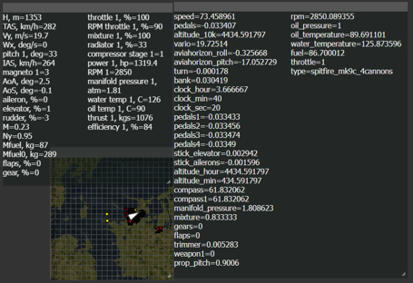

Project introduction
While a flight is running, War Thunder publishes the aircrafts state on a local web server for its browser map. The logger reads that data many times a second, collecting altitude, attitude, heading and airspeed into a table, and saves it as a CSV when the pilot presses stop.

See this project for what i used this data for.
Major design choices
- The games own local API. Port 8111 is a read-only server built into the game. Reading it needs no memory hacking or screen capture, so it is reliable and doesnt touch the game itself.
- MATLAB end to end. webread turns the JSON replies straight into structures. This is a relatively simple project so not much complexity is required
- Sampling rate: There is no fixed rate of updates for the local web server, and little information on tick speed could be found through online forums. Each sample Because of this, each sample carries its own clock time, so uneven spacing is handled in analysis instead of throwing samples away.
- Error samples: If a request fails or a value is missing (paused game, menus), the sample is skipped, so every column stays aligned in time.
- Purpose built stop button. Typically a shortcut such as Ctrl+C is used to terminate a hypothetically infinitely running script, however i added a special built button instead as this shortcut would end the script before saving. The button ends the loop cleanly, so the table and CSV are always written.
Design
| Column | Source | Units |
|---|---|---|
| time | System clock | s (Unix time) |
| alt | /state – H | m |
| speed | /state – TAS | km/h |
| roll | /indicators – aviahorizon_roll | deg |
| pitch | /indicators – aviahorizon_pitch | deg |
| yaw | /indicators – compass | deg |
| AOA, AOS | Angle of attack and sideslip | deg |
- Two endpoints, two kinds of data:
/stateholds flight-model values such as altitude and true airspeed, while/indicatorsholds what the cockpit instruments show, such as the artificial horizon and compass. - Readable field names: the game’s JSON keys include units, like
"H, m". MATLAB converts them into valid field names (H_M,TAS_Km_h), which the script reads directly. - Easy to extend: each channel is one read and one log array, so adding a value such as vertical speed or g-load is two lines.
Results
- Complete flights captured: the logger runs for a whole mission and writes a CSV that the reconstruction script reads directly.
- Robust to the game’s state: pausing, menus and dropped requests skip samples instead of crashing the logger or misaligning columns.
Reviewing the code for this page found three issues. The AOA and AOS columns read the artificial horizon’s pitch and roll, so they duplicate those columns instead of recording angle of attack and sideslip. Every run saves to the same file name, so the next flight overwrites the last. And the closing message names a different file from the one actually written.
Future developments
- Log angle of attack and sideslip. Both are in /state. Necessary: they are the most useful values for studying handling, and the current columns are copies.
- Timestamped file names. Currently produced CSV names are set before logging begins, so overwriting of files intened to be kept can easily accidentaly happen, to avoid this a date and time needs to be added to avoid this overwriting.